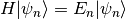
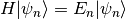
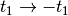
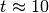
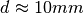

graphene_flake
The graphene_flake package models a tight-binding graphene flake submitted to
inhomenehous strain leading to a uniform pseudo magnetic field and pseudo Landau
levels (pLLs).
graphene_flake is available at https://github.com/cpoli/graphene_flake
-
class
graphene_flake.graphene_flake(t_1, t_2, t_3, ext)[source]
Bases: object
This is the mother class of the graphene_flake package which solve
the eigenvalue problem, plot the spectrum, and get the Hofstater butterfly.
The methods of this class are generic and works for any kind of flake.
Example usage:
# |
# B
# / \
# A A
#
# with the three hoppings:
# t_1 |
# t_2 /
# t_3 \
| Parameters: |
- t_1 – Hopping parameter t_1.
- t_2 – Hopping parameter t_2.
- t_3 – Hopping parameter t_3.
- ext – Format of the figures to be saved.
|
|---|
-
get_indices()[source]
Get the indices associated with A and B sublattices.
-
get_eig_lin_strain(strain, eig_vec=False, vortex=False, vacancy=False, row_vacancy=0)[source]
Build up the Hamiltonian  and solve the eigenvalue problem
.
and solve the eigenvalue problem
.
| Parameters: |
- strain – Default value 0. Strength of the strain.
- eig_vec – Default value False. Get and store the eigenvectors.
- vortex – Default value False. Create a vortex at the middle of flake.
|
|---|
Note
The vortex is created by changing the sign of the hopppings
, for half of the bonds in the row
at the middle of the flake.
| Parameters: |
- vacancy – Default value False. Create a vacancy-defect.
- row_vacancy – Defect value 0. Row index of the vacancy defect.
The vacancy defect is located at the center of the row.
|
|---|
-
get_states_selec(e_min, e_max)[source]
Get, if any, the wave function support of the states between e_min and e_max.
-
get_butterfly(nbr_points=100, ener_lim=[-2.0, 2.0], vortex=False, save=True)[source]
-
plt_spec(nbr_bins=101, ener_lim=[-1.0, 1.0], ms=10, plt_pola=False, save=False)[source]
Plot the spectrum in two different ways:
- energy level staircase.
- number of states (histogram).
| Parameters: |
- nbr_bins – Default value 101. Number of bins of the histogram.
- ener_lim – Default value [-1.5, 1.5]. list of the energy min and max.
- ms – Default value 10. Size of the markers.
- plt_pola – Default value False. Plot the A sublattice polarization.
- save – Default value False. Save the two figures.
|
|---|
-
plt_states_selec(lw=1, coef=100000.0, fontsize=20, plt_sites=False, plt_bonds=False, plt_axis=False, save=False)[source]
- Plot the sum of the probability densities satisfying the condition
- imposed by the method get_states_cond.
| Parameters: |
- lw – Default value 1. Line width of the bonds.
- coef – Default value 100000. Increase the area of the circles by a factor coef.
- fontsize – Default value 20. Size of the font used for the axis labels and the title.
- plt_sites – Default True. Plot the sites.
- plt_bonds – Default value False. Plot the bonds.
- plt_bonds – Default value False. Plot the sites.
- save – Default value False. Save the figures.
|
|---|
-
plt_lattice(lw=1, s=100, plt_sites=True, plt_bonds=True, plt_axis=False, save=False)[source]
Plot the lattice. Blue points correspond to the A sublattice.
Red points correspond the the B sublattice.
| Parameters: |
- lw – Default value 1. Line width of the bonds.
- s – Default value 100. Area of each marker.
- plt_sites – Default True. Plot the sites.
- plt_bonds – Default True. Plot the bonds.
- plt_axis – Default False. Plot the axis.
- save – Default False. Save the figure.
|
|---|
-
plt_lattice_hop(lw=1, s=100, real_mw=False, plt_axis=False, plt_sites=True, plt_bonds=True, save=True)[source]
Plot the lattice in hopping space.
Blue points correspond to the A sublattice.
Red points correspond the the B sublattice.
| Parameters: |
- lw – Default value 1. Line width of the bonds.
- s – Default value 100. Area of each marker.
- real_mw – Default value False. Plot the lattice in real space considering
the microwave regime ( and )
- plt_sites – Default False. Plot the sites.
- plt_bonds – Default False. Plot the bonds.
- plt_axis – Default False. Plot the axis.
- save – Default False. Save the figure.
|
|---|
-
plt_bonds(coor_x, coor_y, lw=1)[source]
Plot the bonds of the lattice.
-
check_dir()[source]
Create if the directory to store the figures exists.
-
plt_show()[source]
Duplicate the matplotlib method show to avoid importing
matplotlib to plot on screen the figures generated
by the graphene_flake class.
-
class
graphene_flake.tri_to_hexa_zz(sites_base, sites_cut=0, t_1=1.0, t_2=1.0, t_3=1.0, ext='png')[source]
Bases: graphene_flake.graphene_flake
This is a child class of graphene_flake. tri_to_hexa_zz models
a triangular flake and the transition from triangular to hexagonal flake.
The transition is obtained but cutting the edges of the triangular flake.
Example usage:
# Triangular flake with one 3 sites at the base:
# A 8
# | |
# B 7
# / \ / \
# A A 5 6
# | | | |
# B B 3 4
# / \ / \ / \ / \
# A A A 0 1 2
#
#
# Triangular flake with one 3 sites at the base and 1 cut:
# B 7
# / \ / \
# A A 5 6
# | | | |
# B B 3 4
# \ / \ /
# A 1
#
-
get_lin_strain_lims()[source]
Get the maximal negative and positive strain keeping the hoppings positive.
-
get_coor_lin_strain(hop_plt_x, hop_plt_y)[source]
Get the lattice site positions in hopping space.
Method essentially used to be plot the lattice in hopping space.
| Parameters: |
- hop_plt_x – array containing the hoppings (or distances) along x.
- hop_plt_y – array containing the hoppings (or distances) along y.
|
|---|
-
graphene_flake.hop_to_real_mw(hop)[source]
Get the sites position in real space from the hoppings.
-
graphene_flake.main()[source]